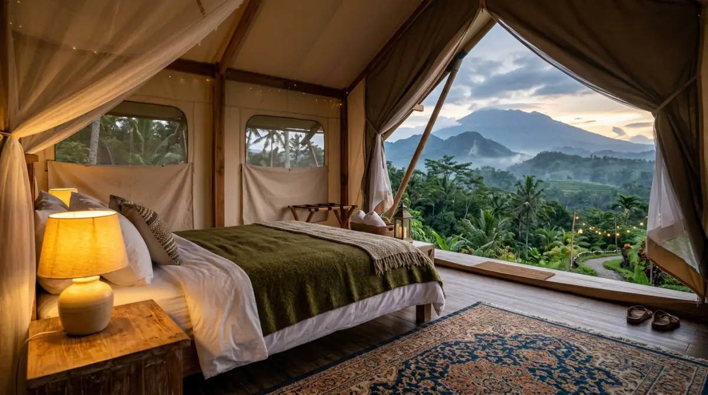

Paket camping keluarga adalah solusi cerdas agar momen berharga bersama anak-anak tak terbuang oleh urusan logistik yang melelahkan.
Paket camping keluarga adalah solusi cerdas agar momen berharga bersama anak-anak tak terbuang oleh urusan logistik yang melelahkan.
- Mengapa Memilih Paket Adalah "Jalan Ninja" Orang Tua Modern?
- Membedah Jenis Paket Camping Keluarga di Pasaran
- Glamping: Kemewahan Bintang Lima di Tengah Hutan
- Full-Board Tenda Safari: Estetik dan Ramah Anak
- Paket Camping Konvensional "Terima Beres"
- Campervan Family Trip: Roadtrip Impian yang Membumi
- Checklist Wajib Sebelum "Deal" dengan Provider Paket
- Sebuah Refleksi untuk Para Orang Tua
- FAQ
Pernahkah kamu menyadari betapa cepatnya anak-anak tumbuh besar? Rasanya baru kemarin mereka belajar berjalan, tapi akhir pekan ini mereka mungkin sudah lebih asyik mengunci diri di kamar bersama layar gadget-nya. Ada sebuah "jendela waktu emas" yang sangat singkat di mana anak-anak masih menganggap liburan dan bermain tanah bersama orang tuanya adalah petualangan paling epik di dunia.
Lewatkan masa ini, dan kamu mungkin akan menyesal saat melihat mereka remaja nanti dan lebih memilih hangout bersama teman-temannya ketimbang ikut acara keluarga.
Kamu tahu betul, membawa mereka kembali ke alam adalah cara terbaik untuk membangun bonding dan menjauhkan mereka dari kecanduan layar. Namun, membayangkan harus mengepak puluhan barang, mendirikan tenda sambil menenangkan anak yang rewel, hingga urusan cuci piring di tengah malam rasanya sudah bikin pinggang linu duluan. Jangan sampai keribetan logistik ini mengubur niat baikmu dan membuang kesempatan emas itu. Untungnya, kini ada solusi brilian berupa paket camping keluarga yang siap menyelamatkan akhir pekanmu. Yuk, kita bedah opsi-opsi terbaiknya!
Mengapa Memilih Paket Adalah "Jalan Ninja" Orang Tua Modern?
Bekerja dari Senin sampai Jumat dengan segala deadline dan drama kantor sudah cukup menguras energimu. Memilih untuk mengurus semuanya sendiri saat camping ibarat kamu menjadi manajer proyek, kuli panggul, sekaligus koki katering dalam satu waktu di hari liburmu. Niatnya healing dari kepenatan kerja, eh malah feeling dizzy karena kelelahan.
Mengambil paket camping keluarga itu konsepnya mirip dengan menyewa Event Organizer (EO) saat kantor mengadakan gathering tahunan. Kamu menyerahkan urusan teknis yang memusingkan kepada ahlinya, sehingga kamu bisa fokus pada hal yang paling penting: menikmati momen.
Para penyedia jasa ini sudah tahu betul standar keamanan tenda, kelayakan gizi makanan, hingga mitigasi jika cuaca tiba-tiba tidak bersahabat. Berdasarkan pengamatan panjang di berbagai lokasi wisata alam, keluarga yang menyewa paket wisata biasanya terlihat lebih santai dan banyak tertawa di pagi hari, kontras dengan mereka yang kelelahan karena harus merapikan tenda basah sendiri.
Membedah Jenis Paket Camping Keluarga di Pasaran
Agar tidak salah pilih, kamu harus tahu bahwa "paket camping keluarga" memiliki banyak wajah. Dari yang benar-benar mewah sampai yang memberikan sensasi survival ringan namun tetap terfasilitasi.
1. Glamping (Glamorous Camping): Kemewahan Bintang Lima di Tengah Hutan
Jika ini adalah pengalaman pertama anak-anak (atau bahkan kamu sendiri) tidur di alam terbuka, Glamping adalah gerbang transisi yang paling mulus. Di paket ini, kamu tidak akan menemukan sleeping bag yang sempit atau matras tipis.
Sebagai gantinya, kamu akan tidur di atas springbed empuk yang dibalut selimut tebal nan wangi. Tenda Glamping biasanya berbentuk dome besar atau struktur kayu semi-permanen yang sudah dilengkapi dengan colokan listrik, air conditioner (AC) atau kipas angin, dan water heater di kamar mandinya.
Kamu harfiahnya hanya perlu membawa koper berisi baju ganti, layaknya check-in di hotel. Keunggulannya jelas: kenyamanan mutlak. Namun kekurangannya, bagi beberapa kaum puritan outdoor, glamping dianggap kurang memberikan "jiwa petualangan" yang sesungguhnya karena jarak dengan kemewahan kota masih terlalu dekat.

Interior glamping yang mewah dan nyaman — tidur di atas springbed empuk sambil merasakan udara sejuk pegunungan adalah kemewahan yang bisa dinikmati seluruh keluarga.2. Full-Board Tenda Safari (Semi-Glamping): Estetik dan Ramah Anak
Berada di tengah-tengah antara Glamping dan camping konvensional, ada paket tenda safari atau bell tent (tenda kanvas berbentuk kerucut yang estetik). Paket ini sangat populer untuk keluarga menengah yang ingin merasakan tidur di tenda beneran tapi enggan masuk angin.
Pihak pengelola biasanya sudah mendirikan tenda yang kokoh dan tahan badai ini sebelum kamu datang. Di dalamnya sudah disiapkan kasur angin (airbed) atau matras dacron tebal. Paket ini biasanya sudah full-board, artinya kebutuhan makan malam (seperti BBQ), sarapan, dan camilan sudah termasuk dalam harga bayar.
Anak-anak bisa merasakan serunya membakar marshmallow di api unggun yang sudah dinyalakan oleh petugas, tanpa kamu harus susah payah mencari kayu bakar di hutan. Ini ibarat sistem turnkey dalam proyek konstruksi—kamu terima kunci, semua sudah beres dan siap dinikmati.
3. Paket Camping Konvensional "Terima Beres"
Bagi kamu yang ingin anak-anak merasakan camping sungguhan dengan tenda dome kecil ala pendaki, namun sadar diri pinggang tidak sekuat dulu, paket ini jawabannya. Penyedia jasa akan mendirikan tenda dome double layer standar di campsite pilihanmu.
Mereka menyiapkan perlengkapan esensial seperti flysheet (atap tambahan), meja kursi lipat kecil, lampu tenda, dan peralatan masak portable. Serunya, kamu dan keluarga tetap memasak makanan sendiri menggunakan kompor gas mini, sehingga sensasi survival ringannya tetap dapet, namun tanpa beban harus mencuci panci kotor di sungai keesokan harinya karena semua alat akan dibereskan oleh kru. Paket ini biasanya paling ekonomis namun memberikan pengalaman paling otentik.
"Anak-anak tidak membutuhkan orang tua yang sempurna atau liburan yang menunggu waktu luang. Mereka hanya butuh kehadiranmu hari ini."
— Refleksi untuk Orang Tua Modern4. Campervan Family Trip: Roadtrip Impian yang Membumi
Ini adalah tren yang sedang naik daun belakangan ini. Daripada diam di satu titik, kenapa tidak membawa rumahmu berjalan-jalan? Paket campervan menyewakan mobil van yang bagian belakangnya sudah disulap menjadi kasur yang nyaman, lengkap dengan laci-laci penyimpan makanan dan peralatan masak.
Sore hari, kamu memarkir van di area camping khusus (campervan park), membuka kanopi mobil, dan bersantai sambil menikmati pemandangan alam. Anak-anak biasanya sangat antusias karena mobil berubah menjadi markas rahasia mereka. Cocok untuk keluarga dengan mobilitas tinggi yang suka berpindah-pindah lokasi dari pantai ke pegunungan dalam satu rangkaian liburan.
Checklist Wajib Sebelum "Deal" dengan Provider Paket
Jangan terburu-buru mentransfer uang hanya karena melihat foto-foto yang estetik di media sosial. Sama halnya dengan memvalidasi vendor di kantor, pastikan kamu mengecek rekam jejak mereka. Ada beberapa detail krusial yang menentukan sukses tidaknya liburan alam keluargamu.
Pertama, perhatikan kebersihan dan rasio toilet. Anak-anak, terutama balita, tidak bisa berkompromi soal toilet. Pastikan campsite yang digunakan provider memiliki fasilitas kamar mandi yang bersih, terang di malam hari, dan rasio jumlahnya memadai dengan jumlah tenda agar tidak perlu antre panjang di pagi hari.
Kedua, jarak parkir ke area tenda. Tanyakan kepada admin berapa meter jarak dari mobil ke tenda. Jika ada anak balita, berjalan jauh dengan jalanan menanjak meski tidak membawa barang bawaan berat tetap saja berisiko membuat anak kelelahan sebelum acara dimulai.
Ketiga, kebijakan darurat cuaca. Alam tidak bisa ditebak. Tanyakan apa protokol mereka jika terjadi hujan badai malam itu. Provider yang kredibel pasti memiliki pendopo atau aula evakuasi yang aman dan kering.
Sebuah Refleksi untuk Para Orang Tua
Waktu adalah satu-satunya mata uang di dunia ini yang tidak bisa kita tabung atau putar kembali. Masa kecil anak-anak adalah etalase waktu yang berjalan sangat cepat. Mungkin saat ini kamu merasa menunda liburan karena kesibukan kerja adalah keputusan yang logis. Kamu mungkin berpikir, "Ah, nanti saja tunggu agak luang, tunggu gajian bulan depan, tunggu cicilan rumah lunas."
Tapi ketahuilah, anak-anak tidak membutuhkan orang tua yang sempurna atau liburan yang menunggu waktu luang. Mereka hanya butuh kehadiranmu hari ini. Membeli sebuah paket camping keluarga bukan sekadar transaksi menyewa tenda dan makanan; kamu sedang berinvestasi membeli kenangan yang akan mereka ceritakan dengan mata berbinar bertahun-tahun kemudian.
Jangan biarkan alasan "repot" merampas momen ajaib itu dari keluargamu. Tutup laptopmu sejenak, pesan paket liburan itu akhir pekan ini, dan bersiaplah menyambut senyum terlebar dari wajah mereka di bawah langit malam yang penuh bintang.
FAQ — Paket Camping Keluarga Terbaik